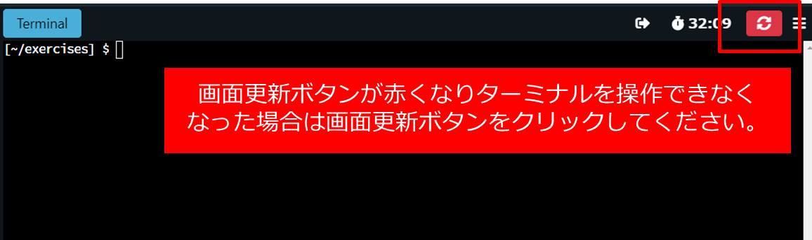

はじめに #
本ハンズオンはDocker およびKubernetes について学習することを目的としております。 それぞれのラボは独立しており、どちらか一方だけを実施することも、両方実施することも可能です。
本ハンズオンの対象 #
これからDocker やKubernetes の学習を始める方
時間 #
Appendix を除けば、Docker ハンズオンは30 分、Kubernetes ハンズオンは1 時間、計1.5 時間程度です。
準備するもの #
- インターネットに接続できるPC （仮想マシン可）
- ブラウザでハンズオン環境にアクセスするため、ハンズオンの受講にあたりDocker やKubectl などのインストールは不要です。
- Chrome またはFirefox ブラウザ（IE は不可）
- VMware Customer Connect (旧My VMware) またはGithub のアカウント
- Customer Connect のアカウントの作成方法
- https://customerconnect.vmware.com/jp/account-registration
ラボへのアクセス方法 #
本ハンズオンはTanzu Workshop の環境を使います。
https://tanzu.vmware.com/developer/workshops/
様々なラボにアクセスすることができますが、本ハンズオンではContainer Basics およびKubernetes Fundamentals のラボを使用します。
一般的なラボ操作 #
ラボのイメージは以下の通りです。
本マニュアルの使い方 #
本マニュアルはコンテナハンズオン、Kubernetes ハンズオンの2 部構成となっています。 それぞれのラボは独立しており、どちらか一方だけを実施することも、両方実施することも可能です。
ラボの流れとしては、適宜解説を読みつつ、ターミナルにコマンドを入力していきます。
以下の通り、コピーボタン📋 が表示されているコマンドは順番にターミナルに入力してください（一部URL はブラウザに直接入力します）。コピーボタン📋 をクリックするとクリップボードにコマンドがコピーされますので、ターミナル上で右クリック→貼り付け でコマンドを入力してください。
Ctrl + v のようなショートカットは使えません。
date
一方で、単なる画面の出力に関しては以下の通りコピーボタンなしで表記しています。
これは
ターミナルに
入力する必要は
ありません
その他、一部ラボには演習を含みます。必要に応じてチャレンジしてみてください。
注意事項 #
- 本ハンズオンはラボで展開されるマニュアルをベースに、解説を加えたり、一部効率化するために手順が異なる場合があります。したがって、ラボのマニュアルは使用せず、本マニュアルをご利用ください。
- ラボにアクセスする際、「Invalid session name supplied」などのエラーでラボが立ち上がらない場合があります。その際はブラウザの戻るボタンをクリックし、再度アクセスします。ラボは1 分程度で立ち上がるはずです。
- しばらく操作をしないとラボから自動的に切断されますので、その場合はラボ画面更新ボタンをクリックしてください。
 - ラボの時間制限がありますので、時間が無くなってきたら延長します。
ボタンが赤くなる（残り時間が少なくなる）まで延長できないことに注意してください。